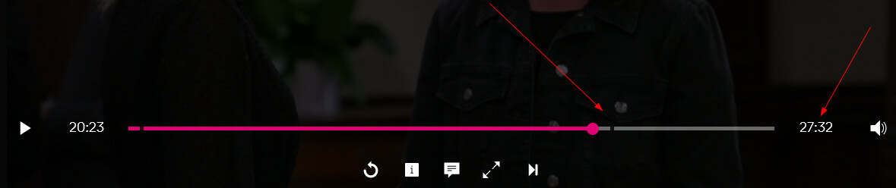

Magenta TV Box - Erfahrungsberichte voller Frustration und Enttäuschung!
Tine86
So, und damit alle wissen was diese TV Box für ein Sch*** ist, stelle ich meinen Beitrag hier gerne noch einmal rein, mein alter Beitrag ist aus "irgendwelchen" gründen ja nicht mehr auffindbar.... aber es sollen ruhig alle wissen was das für ein Müll ist!!! wie hier schon sooft geschrieben wurde: "FINGER WEG!"
"Ich bin wirklich schwer enttäuscht von euch! Diese Magenta TV Box ist der absolute Müll und es interessiert niemanden!! Was soll diese Werbung von wegen: "loyal ist ungleich egal"? Es ist euch SCHE** EGAL, dass diese Box nicht annähernd funktioniert, wie sie soll! Und wie ich gesehen habe, gibt es auch unzählige Beschwerden darüber im Internet!
Ich habe bei euch schon einmal angerufen, und mit euch darüber gesprochen, aber ihr kommt mir nicht den kleinsten Schritt entgegen, und das obwohl ich schon Jahrelang Kunde bei euch bin!
Ich zähle euch die nervigsten Fehler der Box gerne noch einmal auf, aber ihr müsstet sie eigentlich schon auswendig kennen!!
*man kann nicht vorspulen
*dauernd erscheint die Fehlermeldung "Fehler bei der Wiedergabe"
*Es wird bei Serien weder angezeigt was bereits aufgenommen wurde, geschweige denn was man davon schon gesehen hat, es ist eine ständige Sucherei!
*wenn ich einen aufgenommenen film unterbreche, um ihn am nächsten Tag weiterzuschauen, fängt er oft wieder von vorne an, und vorspulen geht ja nicht...
*ich hab tatsächlich bei mindestens 90% meiner Folgen das Ende nicht drauf!
Beim letzten Punkt meinte die Dame von der Hotline, ich solle einfach den nächsten Film aufnehmen, dann ist dort das Ende vom letzten Film drauf... Echt jetzt? Das kann wohl kaum die Lösung sein?!
Ich muss für diese, mehr als fehlerhafte TV Box jetzt 2 Jahre bezahlen, weil ich nicht die Möglichkeit habe sie zu kündigen, das kann nicht euer Ernst sein?
Ich habe damals bei der Hotline auch gefragt, ob ich die neue Box gegen eine alte austauschen kann, dies wurde verneint! Es heißt, es werden Updates kommen die nach und nach die Fehler beheben, das Gerät sei noch in der Testung! Und wielang soll ich bitteschön darauf warten? Ich bin wirklich stinksauer, dass es niemanden Interessiert, hauptsache wir (die Kunden) bezahlen brav!
Was mich angeht: Ich werde, sobald es mir möglich ist, alles (auch meinen Handyvertrag) bei euch kündigen, und Zukunft einen großen Bogen um Magenta machen, das ist wirklich nicht in Ordnung wie ihr mit euren Kunden umgeht!!!"
Für welche Fragen, Antworten oder Beiträge ist die Community geeignet?
In der Magenta Community helfen User anderen Usern bei Fragen, die allgemein beantwortet werden können.
Die Expert*innen und Moderator*innen haben aber keinen detaillierten Einblick in deine Vertragsdaten. Ein klassischer Kundenservice ist daher nicht möglich und auch keine Alternative für eine Kontaktaufnahme mit Magenta.
Wenn du eine spezifische Auskunft zu deinem Vertrag, einem Tarif oder Ähnliches brauchst bzw. dich - aus welchen Gründen auch immer -
über etwas beschweren oder einfach nur Feedback geben möchtest, ist der Kundenservice (0676 2000) der ideale Ansprechpartner für dich.
Für welche Fragen, Antworten oder Beiträge ist die Community geeignet?
In der Magenta Community helfen User anderen Usern bei Fragen, die allgemein beantwortet werden können.
Die Expert*innen und Moderator*innen haben aber keinen detaillierten Einblick in deine Vertragsdaten. Ein klassischer Kundenservice ist daher nicht möglich und auch keine Alternative für eine Kontaktaufnahme mit Magenta.
Wenn du eine spezifische Auskunft zu deinem Vertrag, einem Tarif oder Ähnliches brauchst bzw. dich - aus welchen Gründen auch immer -
über etwas beschweren oder einfach nur Feedback geben möchtest, ist der Kundenservice (0676 2000) der ideale Ansprechpartner für dich.
Liebe Grüße JD.
ja herzlichen dank für deinen text, aber da habe ich schon überall angerufen, inklusive bei der technischen Hotline! und wie ich geschrieben habe, interessiert es niemanden!! ich bekomme für dezember 13€ gutgeschrieben (und was ist mit den anderen monaten???), darf brav auf ein uptate warten und hoffen das irgendjemand fähig ist diese sch*** box anständig zu überarbeiten!!!
das kann echt nicht euer Ernst sein!
Baal42
Ich muss mich jetzt auch mal zu wort melden. Ich hatte am Anfang die gleiche Meinung über die neue Box! Wenn man die alte 4k Box kennt und dann startet man zum ersten mal die neue Box dann denkt man sich mal kurz was zum teufel ist das eigentlich. Wir haben ganze 3 Boxen im Haushalt und haben zum glück keine Probleme damit. Heute hat eine Box 2 updates bekommen und diese können sich sehen lassen. Die box ist nun um einiges schneller das Menü beim umschalten schaut jetzt fast wieder so aus wie bei der alten box. Ein insider hat mir auch erzählt wieso die alten Boxen einegzogen werden. Es soll wohl Auflagen gegeben haben bei der Übernahme von UPC und die Magenta Kundendatenbank kann keine EOS Boxen (alte 4k box) verwalten dazu braucht man eine andere Datenbank wo es keine Lizenz mehr gibt.
es freut mich, dass du mit den neuen Magenta TV Boxen zufrieden bist und die Updates nun endlich Früchte tragen :-). Was der Grund für das Einziehen der alten TV Boxen ist, wird offiziell so begründet:
Wir stellen unsere TV-Kunden systematisch auf die neue Magenta TV Plattform und Box um - und somit auf die neueste Technologie im Bereich Entertainment. Damit nutzen Sie schon heute die Vorteile, die das Fernsehen von morgen bietet, z.B. Zugriff auf zahlreiche Apps und Streaming Dienste. Die bisher von Ihnen genutzte Box wird künftig nicht mehr von uns serviciert und läuft aus.
es freut mich, dass du mit den neuen Magenta TV Boxen zufrieden bist und die Updates nun endlich Früchte tragen :-). Was der Grund für das Einziehen der alten TV Boxen ist, wird offiziell so begründet:
Wir stellen unsere TV-Kunden systematisch auf die neue Magenta TV Plattform und Box um - und somit auf die neueste Technologie im Bereich Entertainment. Damit nutzen Sie schon heute die Vorteile, die das Fernsehen von morgen bietet, z.B. Zugriff auf zahlreiche Apps und Streaming Dienste. Die bisher von Ihnen genutzte Box wird künftig nicht mehr von uns serviciert und läuft aus.
LG JD.
Bei dem Punkt neueste Technologie muss ich lachen den die neue Box kann aktuell viel weniger als die alte! Das ist mir schon klar das nach aussen ein anderes wording stattfindet. Ich bin in der glücklichen lage eine Box zu haben die auch beta softwareversionen bekommt.
Ich finde es halt nur schlimm das die Kunden hier zu testpersonen werden. Ich habe früher über eine externe Firma alle Tv Boxen die upc eingeführt hat zum testen bekommen wo eben Softwareprobleme und fehler aufgezeigt wurden und erst dann wurden die boxen gelauncht.
Ich kann auch absolut nicht verstehen wieso die Firma in punkto Callcenter den aktuellen weg eingeschlagen hat, und extrem auf externe Mitarbeiter setzt! Ich habe jetzt mehrfach mit der Hotline zutun gehabt und es war teilweise echt schlimm was da für Leute sitzen! Wenn ein Mitarbeiter an Technischen Hotline nur sehr schlecht deutsch spricht und technisch absolut keine Ahnung hat und nichtmal den unterschied zwischen ipv4, ipv6 und ds lite kennt. So wie es ausschaut zählt nur noch der profit aber das ist eine andere Geschichte und hat nichts mit der TV Box zutun.
Bruno1006
Ich ärgere mich jeden Tag aufs neue über diesen Schrott von TV Box. Es ist ein absolute Frechheit so etwas den Kunden zu verkaufen. Ich frage mich ob man nicht was unternehmen kann wenn eine Firma einem ein schlechteres Produkt gibt, als das vorherige. Gestern wieder einfach mitten in der Verlängerung der Fussball WM ein Absturz. Wie du schon gesagt hast, ist die Handhabung der aufgenommenen Sendungen eine absolute Katastrophe, da war ein Programmierer am Werk der überhaupt keinen Ahnung von Fernsehen hat. Ein Frustmoment ist immer wenn ich bei den aufgenommen Sendungen die dabei habe, die in der Zukunft aufgenommen werden. Der absolute Höhepunkt heute, die Aufnahme der Sendung "Tirol heute" vom 1.1. 2023. wird mir als Aufnahme angezeigt. Ich frage mich manchmal ob man die Firma nicht rechtlich belangen kann. Wenn sich viele melden würden z. Bsp. beim Konsument, müsst man doch Druck ausüben können. Jedenfalls bin ich nicht bereit mich so pflanzen zu lassen von Magenta.
marc82x
Am 19.12.2022 um 16:52 schrieb Bruno1006:
Ich ärgere mich jeden Tag aufs neue über diesen Schrott von TV Box. Es ist ein absolute Frechheit so etwas den Kunden zu verkaufen. Ich frage mich ob man nicht was unternehmen kann wenn eine Firma einem ein schlechteres Produkt gibt, als das vorherige. Gestern wieder einfach mitten in der Verlängerung der Fussball WM ein Absturz. Wie du schon gesagt hast, ist die Handhabung der aufgenommenen Sendungen eine absolute Katastrophe, da war ein Programmierer am Werk der überhaupt keinen Ahnung von Fernsehen hat. Ein Frustmoment ist immer wenn ich bei den aufgenommen Sendungen die dabei habe, die in der Zukunft aufgenommen werden. Der absolute Höhepunkt heute, die Aufnahme der Sendung "Tirol heute" vom 1.1. 2023. wird mir als Aufnahme angezeigt. Ich frage mich manchmal ob man die Firma nicht rechtlich belangen kann. Wenn sich viele melden würden z. Bsp. beim Konsument, müsst man doch Druck ausüben können. Jedenfalls bin ich nicht bereit mich so pflanzen zu lassen von Magenta.
so ist es!!!!
WorGra
Am 28.11.2022 um 22:21 schrieb Tine86:
So, und damit alle wissen was diese TV Box für ein Sch*** ist, stelle ich meinen Beitrag hier gerne noch einmal rein, mein alter Beitrag ist aus "irgendwelchen" gründen ja nicht mehr auffindbar.... aber es sollen ruhig alle wissen was das für ein Müll ist!!! wie hier schon sooft geschrieben wurde: "FINGER WEG!"
"Ich bin wirklich schwer enttäuscht von euch! Diese Magenta TV Box ist der absolute Müll und es interessiert niemanden!! Was soll diese Werbung von wegen: "loyal ist ungleich egal"? Es ist euch SCHE** EGAL, dass diese Box nicht annähernd funktioniert, wie sie soll! Und wie ich gesehen habe, gibt es auch unzählige Beschwerden darüber im Internet!
Ich habe bei euch schon einmal angerufen, und mit euch darüber gesprochen, aber ihr kommt mir nicht den kleinsten Schritt entgegen, und das obwohl ich schon Jahrelang Kunde bei euch bin!
Ich zähle euch die nervigsten Fehler der Box gerne noch einmal auf, aber ihr müsstet sie eigentlich schon auswendig kennen!!
*man kann nicht vorspulen
*dauernd erscheint die Fehlermeldung "Fehler bei der Wiedergabe"
*Es wird bei Serien weder angezeigt was bereits aufgenommen wurde, geschweige denn was man davon schon gesehen hat, es ist eine ständige Sucherei!
*wenn ich einen aufgenommenen film unterbreche, um ihn am nächsten Tag weiterzuschauen, fängt er oft wieder von vorne an, und vorspulen geht ja nicht...
*ich hab tatsächlich bei mindestens 90% meiner Folgen das Ende nicht drauf!
Beim letzten Punkt meinte die Dame von der Hotline, ich solle einfach den nächsten Film aufnehmen, dann ist dort das Ende vom letzten Film drauf... Echt jetzt? Das kann wohl kaum die Lösung sein?!
Ich muss für diese, mehr als fehlerhafte TV Box jetzt 2 Jahre bezahlen, weil ich nicht die Möglichkeit habe sie zu kündigen, das kann nicht euer Ernst sein?
Ich habe damals bei der Hotline auch gefragt, ob ich die neue Box gegen eine alte austauschen kann, dies wurde verneint! Es heißt, es werden Updates kommen die nach und nach die Fehler beheben, das Gerät sei noch in der Testung! Und wielang soll ich bitteschön darauf warten? Ich bin wirklich stinksauer, dass es niemanden Interessiert, hauptsache wir (die Kunden) bezahlen brav!
Was mich angeht: Ich werde, sobald es mir möglich ist, alles (auch meinen Handyvertrag) bei euch kündigen, und Zukunft einen großen Bogen um Magenta machen, das ist wirklich nicht in Ordnung wie ihr mit euren Kunden umgeht!!!"
Ist mir sich so ergangen, die Box sowie die Service und Technikline ist alles andere als kompetent, also Sch.......
WorGra
So ergeht es einem wenn man den Technischen Support kontaktiert.
Sehr geehrter Herr Worch,
Bitte melden Sie sich bei meinen Kollegen vom technischen Support.
Sie erreichen unseren technischen Support täglich von 08:00 - 22:00 Uhr unter der Telefonnummer 0676 200 77 77.
Mit freundlichen Grüßen
XXXXXXXXX
Ihr Magenta Serviceteam
Rechtliche Information - Streitschlichtung:
KundInnen und Interessenvertretungen haben die Möglichkeit, sich bei nicht gelösten Streit- oder Beschwerdefällen, unbeschadet der Zuständigkeit der ordentlichen Gerichte, an die Schlichtungsstelle der Rundfunk und Telekom Regulierungs GmbH (1060 Wien, Mariahilfer Straße 77-79) zu wenden. Informationen zum Verfahren unter www.rtr.at
--------------- Ursprüngliche Nachricht ---------------
Von: EWG XXXXXXXXX
Gesendet: 11.01.2023 11:17
An: kontaktformular@magenta.at
Thema: AW: T-Mobile Austria GmbH Case # 5005I00000X0mWAref:_ Kontakt via Website [ ref:_00D0N1MgJA._5005IX0mWA:ref ]
Sehr geehrtes Magenta Serviceteam !
Wie oft soll ich noch beim technischen Support anrufen, und meine kostbare Zeit vergeuden, das habe ich inzwischen schon 10 mal hinter mir.
Weil jeder technische Supporter ein anderes Märchen erzählt, nur um die nicht ausgereifte Technik ihrer Box zu verschleiern.
Immer nur Reset und nochmal Reset, Stecker ab und Stecker drauf, was soll das
Wir Kunden sind doch nicht euer Versuchskaninchen, um diese nicht mal ausgereifte Beta Version ihrer Box zu testen.
Ich bin inzwischen sehr sauer auf Magenta, und habe heute die ganze Angelegenheit mit allen Mails, sowie auch ihr Schreiben an uns,, an die Presse weitergeleitet, auch den aufgezwungenen neuen Vertrag,
Mal sehen ob sich Magenta dann mal bewegt.
Mit nicht mehr sehr freundlichen Grüßen
XXXXXXXXX
Von: Kontaktformular TMA <kontaktformular@magenta.at>
Gesendet: Mittwoch, 11. Jänner 2023 10:28
An: erwin.worch@chello.at
Betreff: T-Mobile Austria GmbH Case # 5005I00000X0mWAref:_ Kontakt via Website [ ref:_00D0N1MgJA._5005IX0mWA:ref ]
Sehr geehrter Herr Worch,
vielen Dank für Ihre Nachricht.
Gerne helfen wir Ihnen weiter - kontaktieren Sie dafür bitte unser technisches Support-Team. Meine Kollegen können Ihr Anliegen rasch und zu Ihrer vollen Zufriedenheit klären.
Sie erreichen unseren technischen Support täglich von 8.00 - 22.00 Uhr unter der Telefonnummer 0676 200 77 77.
Hilfreiche Informationen zu den häufigsten technischen Anfragen finden Sie hier in den FAQs auf magenta.at.
Mit freundlichen Grüßen
XXXXXXXXXXX
Ihr Magenta Serviceteam
Wie oft noch, und immer die gleiche Antwort, die denken wohl wenn es langweilig wird gibt der blöde Kunde irgendwann einmal auf.
Bearbeitet
von WorGra
ichbines
Am 9.1.2023 um 11:39 schrieb GHK:
Hallo Leidgepruefte!
Nichts tut sich bei t-Mobile, die Deutschen haben eine TV Box Produktfehlentscheidung getroffen, die Wiener können nix tun, nur hinhalten da man Wien keine Produktentscheidungen erlaubt. Der neue CEO Rodrigo tut mir fast leid. Ich habe "Verständnis" fuer die Probleme, allerdings null Akzeptanz. Allerdings hat Rodrigo vorher schon eine gewisse Zeit bei den Deutschen gearbeitet, er müsste zumindest die Verantwortlichen kennen und hätte eine Riesenchance sich in seiner neuen Rolle als "Hero" zu profilieren.
Um das Problem zu lösen muss es eskaliert werden. Fangen wir mal an damit.
Letztes Jahr hatte der Standard schon ueber T-Mobile's Probleme berichtet. Der Journalist war Andreas Proschofsky. Schreibt ihm mal. Sein email ist Andreas.proschofsky@derstandard.at. Wäre Zeit fuer eine neuen Artikel.
Auch Heute schrieb darüber, allerdings ziemlich harmlos.
Chefredakteur ist C.Nusser@heute.at (c fuer Christian).
Schreibt der Presse mal ausfuehrlich, die Probleme sind so wesentlich grösser als die wissen, und T-Mobile in Oesterreich kann das Problem nicht lösen.
Letztes Jahr hatte der Standard schon ueber T-Mobile's Probleme berichtet. Der Journalist war Andreas Proschofsky. Schreibt ihm mal. Sein email ist Andreas.proschofsky@derstandard.at. Wäre Zeit fuer eine neuen Artikel.
Auch Heute schrieb darüber, allerdings ziemlich harmlos.
Chefredakteur ist C.Nusser@heute.at (c fuer Christian).
Schreibt der Presse mal ausfuehrlich, die Probleme sind so wesentlich grösser als die wissen, und T-Mobile in Oesterreich kann das Problem nicht lösen.
Auch das Konsumentenmagazin "Konkret" vom ORF kann man via Homepage kontaktieren bzw. evt. Bürgeranwalt was man rechtlich bei so einem unausgereiften Produkt machen kann. Die ganze Magenta Community ist ja voll mit lauter Beiträgen zu dem Thema aber auch bei Facebook Magenta unter den "Besucherbeiträgen".
Lg
Bearbeitet
von ichbines
Ergänzung
Ale76
Ich möchte noch erwähnen. Die alte Box war super. Sogar die Fernbedienung leuchtet. Was für ein Fortschritt die neue Box zum kotzen. Super geschrieben von allen die hier einen Beitrag abgegeben haben.
Ich hoffe die Kunden werden ernst genommen. Denn als Dienstleistung seitens Magenta kann hier nicht die Rede sein.
Es muss eine Lösung her so rasch wie möglich.
im Falle, dass sich von den Betroffenen ein Rechtsanwalt befindet und geil auf Sammelklagen mit Ersatzforderung ist nur zu. Ich und sicher andere haben einen guten Rechtschutz. Sollte auch öffentlich begleitet werden. Danke Magenta für die Deeskalation👏👏👏👏👏
bevor du dir ein TV Produkt bei einem TV Anbieter nimmst, fragst du da auch zuerst, ob die Fernbedienung beleuchtet ist? Wenn nicht, dann meldest du nicht an? Dreh dir ein Licht auf zum Umschalten. Im Dunkeln fernsehen, macht die Augen kaputt ->
bevor du dir ein TV Produkt bei einem TV Anbieter nimmst, fragst du da auch zuerst, ob die Fernbedienung beleuchtet ist? Wenn nicht, dann meldest du nicht an? Dreh dir ein Licht auf zum Umschalten. Im Dunkeln fernsehen, macht die Augen kaputt ->
Vollkommen richtig, man denke nur an alle Kinos weltweit
haha
bevor du dir ein TV Produkt bei einem TV Anbieter nimmst, fragst du da auch zuerst, ob die Fernbedienung beleuchtet ist? Wenn nicht, dann meldest du nicht an? Dreh dir ein Licht auf zum Umschalten. Im Dunkeln fernsehen, macht die Augen kaputt ->
In Zukunft werde ich das wohl mit in Anbetracht ziehen...
Dass die neue FB nicht beleuchtet ist, ist für mich persönlich kein KO Kriterium, aber ich kann vor allem Personen mit Sehschwäche und Sehbeeinträchtigungen sehr gut verstehen. Um so mehr, da bei der neuen FB alle Tasten gleich sind und auch eine haptische Unterscheidung nicht mehr vorhanden ist - das ist in meinen Augen ein absolutes No-Go
Und was bei der FB noch dazu kommt, es fehlen Grundfunktionen wie zB die Mute-Taste oder auch der direkte Zugriff auf den Teletext.
Also ums kurz zu machen - ja, die FB kann schon ein Grund sein, einen TV Anbieter nicht zu wählen.
(vor allem weil man die TV Box mit keiner Drittanbieter FB bedienen kann, man ist also auf die minderwertige FB angewiesen)
Roman Schreiber
vor 3 Stunden schrieb stetre76:
In Zukunft werde ich das wohl mit in Anbetracht ziehen...
Dass die neue FB nicht beleuchtet ist, ist für mich persönlich kein KO Kriterium, aber ich kann vor allem Personen mit Sehschwäche und Sehbeeinträchtigungen sehr gut verstehen. Um so mehr, da bei der neuen FB alle Tasten gleich sind und auch eine haptische Unterscheidung nicht mehr vorhanden ist - das ist in meinen Augen ein absolutes No-Go
Und was bei der FB noch dazu kommt, es fehlen Grundfunktionen wie zB die Mute-Taste oder auch der direkte Zugriff auf den Teletext.
Also ums kurz zu machen - ja, die FB kann schon ein Grund sein, einen TV Anbieter nicht zu wählen.
(vor allem weil man die TV Box mit keiner Drittanbieter FB bedienen kann, man ist also auf die minderwertige FB angewiesen)
Verstehe. Ich habe halt nicht so hohe Ansprüche was FB angeht.
Das -> (vor allem weil man die TV Box mit keiner Drittanbieter FB bedienen kann, man ist also auf die minderwertige FB angewiesen)
ist mir neu. Wusste ich nicht. Das ist ur doof.
Dann ist die TV Box und auch die FB wohl kein Hit...
ichbines
vor 1 Stunde schrieb Eric Sylvester:
Dann ist die TV Box und auch die FB wohl kein Hit...
😁🤞 Hab schon lange nicht mehr so gelacht.
So kann nur jemand schreiben der die TV Box nicht in Verwendung hat.
Es wird auf über 26 (!) Seiten berichtet wie diese ein Rückschritt in der heutigen Zeit ist und Basis Funktionen nicht mehr funktionieren !
Aber klar kann man aus seiner sicht alles schön reden, es soll aber auch noch (genug) Leute geben die einfach nur Fernsehen wollen ohne viel Apps oder ohne viel sich damit beschäftigen uu müssen bzgl. Umwege etc.
Ich denke hier auch an die ältere Generation.
Aber Magenta sch... auf diese Kunden, den sonst würden Sie diese nicht seit über einem halben (!) Jahr hinhalten und vertrösten.
Harry1020
Am 28.11.2022 um 22:21 schrieb Tine86:
So, und damit alle wissen was diese TV Box für ein Sch*** ist, stelle ich meinen Beitrag hier gerne noch einmal rein, mein alter Beitrag ist aus "irgendwelchen" gründen ja nicht mehr auffindbar.... aber es sollen ruhig alle wissen was das für ein Müll ist!!! wie hier schon sooft geschrieben wurde: "FINGER WEG!"
"Ich bin wirklich schwer enttäuscht von euch! Diese Magenta TV Box ist der absolute Müll und es interessiert niemanden!! Was soll diese Werbung von wegen: "loyal ist ungleich egal"? Es ist euch SCHE** EGAL, dass diese Box nicht annähernd funktioniert, wie sie soll! Und wie ich gesehen habe, gibt es auch unzählige Beschwerden darüber im Internet!
Ich habe bei euch schon einmal angerufen, und mit euch darüber gesprochen, aber ihr kommt mir nicht den kleinsten Schritt entgegen, und das obwohl ich schon Jahrelang Kunde bei euch bin!
Ich zähle euch die nervigsten Fehler der Box gerne noch einmal auf, aber ihr müsstet sie eigentlich schon auswendig kennen!!
*man kann nicht vorspulen
*dauernd erscheint die Fehlermeldung "Fehler bei der Wiedergabe"
*Es wird bei Serien weder angezeigt was bereits aufgenommen wurde, geschweige denn was man davon schon gesehen hat, es ist eine ständige Sucherei!
*wenn ich einen aufgenommenen film unterbreche, um ihn am nächsten Tag weiterzuschauen, fängt er oft wieder von vorne an, und vorspulen geht ja nicht...
*ich hab tatsächlich bei mindestens 90% meiner Folgen das Ende nicht drauf!
Beim letzten Punkt meinte die Dame von der Hotline, ich solle einfach den nächsten Film aufnehmen, dann ist dort das Ende vom letzten Film drauf... Echt jetzt? Das kann wohl kaum die Lösung sein?!
Ich muss für diese, mehr als fehlerhafte TV Box jetzt 2 Jahre bezahlen, weil ich nicht die Möglichkeit habe sie zu kündigen, das kann nicht euer Ernst sein?
Ich habe damals bei der Hotline auch gefragt, ob ich die neue Box gegen eine alte austauschen kann, dies wurde verneint! Es heißt, es werden Updates kommen die nach und nach die Fehler beheben, das Gerät sei noch in der Testung! Und wielang soll ich bitteschön darauf warten? Ich bin wirklich stinksauer, dass es niemanden Interessiert, hauptsache wir (die Kunden) bezahlen brav!
Was mich angeht: Ich werde, sobald es mir möglich ist, alles (auch meinen Handyvertrag) bei euch kündigen, und Zukunft einen großen Bogen um Magenta machen, das ist wirklich nicht in Ordnung wie ihr mit euren Kunden umgeht!!!"
alex50
Nach 3 Tagen Test der neuen „Android TV Box" bin ich total enttäuscht – für mich eine totale Fehlentwicklung!
Das Menü bzw. die komplette Oberfläche ist extrem user-unfreundlich!
Der Start der Box bis zum Fernsehen dauert ca. 1 Minute!
Sehr träge auch die Bedienung, Zappen braucht immer jeweils 7 Sekunden bis zum nächsten sauberen Sender-Bild.
Das Favoritenhandling ist inakzeptabel (u.A. keine eigene Nummernvergabe).
Das Aufnahmekonzept ist nicht durchdacht und es gibt Lautstärkeprobleme bei Programmwechsel.
Die beigelegte Primitiv-Fernbedienung ist das Werk von Ignoranten (keine Beleuchtung, kein Sprachbutton und keine Mute-Taste, etc.).
Die Liste der Probleme und Ungereimtheiten bei dieser Box lässt sich beliebig erweitern!
Die Entertainment-4K-Box war ein Highlight gegen diese Fehlkonstruktion, genannt „Android-Box“!
Ich kann mich daher allen negativen Postings in der Magenta Community nur anschließen!
Ich habe nach 3 Tagen wieder meine alte sehr gute Box installiert und werde diese noch bis zum Frist-Ende im Februar nutzen.
Unter diesen misslichen Umständen mit dieser neuen „Android-Box“ wird mein Wechsel zu einem anderen Anbieter immer wahrscheinlicher!!!
Frage: Wie kann ich bei der Entertainment-4K-Box bleiben, besonders nach diesem Fiasko mit der neuen Android TV Box?
WorGra
Auch wenn es einige hier gibt, die diese neue TV Box als das Technische Wunderding loben, geht mir langsam diese Ignoranz der Chefetage, sowie die gefühlte Arroganz gegenüber den Kunden, gehörig auf die Nerven.
Ich habe kein so ein Wunderding geliefert bekommen, und ärgere mich jeden Tag.
Denn wie unten zu sehen, bekommt man nicht mehr Antworten als diese.
Sehr geehrter Herr XXXXX,
vielen Dank für Ihr E-Mail.
Ich habe Ihr Anliegen überprüft.
Wir danken Ihnen für Ihr Feedback. Es tut uns leid, dass Sie mit der neuen TV-Box schlechte Erfahrungen haben.
Wir werden uns natürlich bemühen, unsere Dienstleistungen zu verbessern.
Für weiteren Anliegens sind wir gerne für Sie da.
Mit freundlichen Grüßen
Ihr Magenta Serviceteam
Dies und noch mehr dieser E-Mails vom Serviceteam kann ich gesammelt vorweisen, ca 23 Stück, das ist doch lächerlich von Magenta, immer die gleiche vorgegebene Entschuldigung zu versenden, und darauf hin zu weisen dass man sich genau an die Stelle wenden soll, von der man das Schreiben bekommt, und nicht weiterhelfen kann.
Tausende Kunden siehe Internet, beschweren sich derzeit bei der Umstellung der neuen TV Box.
Ich möchte keine vorgefertigten Entschuldigungen mehr, sondern dass endlich eine Verbesserung der Bild Stabilität, sowie der Bedienbarkeit der Fernbedienung ausgeführt wird. (Update)
Heute war ein Techniker von SLCICable GmbH bei mir in der Wohnung, hat alles durch gemessen, nach seinen Angaben ist vom Modem her und auch bei den Leitungen und Dosen, alles in bester Qualität, aber ich habe weiterhin Bildaussetzer, was ich mit der alten Entertainment 4K Box nicht hatte an gleicher Stelle.
Und auch an einer 2. Box in einem anderen Zimmer nicht habe.
Also wird die Letzte Möglichkeit sein, dass die Box gegen irgendwelche äußeren Einflüsse nicht genügend geschirmt ist, und es so zu den Bildaussetzern kommt in meiner Wohnung.
Die von keinen Geräten innerhalb der Wohnung kommen, da ich auch schon alle in Frage kommenden Geräte entfernt, beziehungsweise Stromlos geschaltet hatte, mit dem Techniker im Haus.
Der Techniker tauschte daraufhin das Modem, die Anschlußdosen, die Boxen, auch untereinander, aber es änderte sich nicht viel.
Wir sind weit davon entfernt, die wie von ihnen in ihrem Umstellungsbrief, sowie in der Werbung verkündete beste Technologie zu Präsentieren.
All das kommt mir wie so ein Husch-Pfusch vor, und nur schnell raus mit dem Zeug, die Zeit (Kunde)wird es schon richten.
Der Techniker bestätigte auch, dass sie massive Probleme mit dieser unfertigen Hardware haben, bei sehr vielen, er sagt fast allen Umsteigern auf die Box, sind es die gleichen oder noch massivere Probleme.
Nachdem mir ein Magenta Service Techniker am Telefon, dann noch empfohlen hat, ich soll die Boxen an ein Lan-Kabel anschließen, dann verlegen sie mir dieses Kabel doch bitte, innerhalb der Unterputz Verlegerohre kostenlos zu einer Lan-RJ45 Dose, denn sie verlangen ja den Umstieg und dazu gehören ja auch die nötigen Anschlüsse. Ihre Kabeldose müsste nun ja auch eine Lan Anschluss Möglichkeit haben, solche Dosen gibt es ja als Unterputzdose.
Dann dürfen sie mir auch sagen ich muss die Box mit Lan-Kabel betreiben um alle technischen Probleme zu umgehen.
Heute hatte ich dann einen ganz schlauen Techniker an der Serviceline, der sagte mir ich muss das Antennenkabel abklemmen, denn die Box läuft ja mit Internet (W-LAN ), danach hätte ich das Problem nicht mehr, jedoch das Problem ist das gleiche geblieben alle paar Minuten Bildaussetzer von mehreren Sekunden.
Bei jedem Anruf erzählen die Techniker/Innen einem neue Storys, die ich schon beim Anhören als Unsinn abtun kann. ( bin selbst Technisch ausgebildet )
Aber direkt mit neuen Varianten von Verträgen aufwarten, da sind die Mitarbeiter/Innen gut geschult, weil man ansonsten angeblich die Qualität nicht sicherstellen kann usw. , mir wurde auch ein neuer Vertrag mit neuer Vertragslaufzeit ( 24 Monate) aufgezwungen, weil ich meine zweite Entertainment Box auch getauscht haben wollte, die ich aber mit dem alten Vertrag auch schon hatte.
In ihrem Schreiben stand, sie werden kostenlos auf eine neue Technologie umstellen.
Und nun hat der Kunde den schwarzen Peter in der Hand.
Neuen Vertrag
Nicht funktionierende TV-Box
Also nur der Kunde zahlt dabei drauf mit Kosten und Nerven.
Anbei nochmal die ganzen aufgelisteten Fehler der Box :
Ich zähle euch die nervigsten Fehler der Box gerne noch einmal auf, aber ihr müsstet sie eigentlich schon auswendig kenn
Diese Box ist beim Einschalten im Energiespar Modus so langsam im Aufbau, dass man inzwischen gemütlich Essen gehen könnte, oder mit der Bim von einem in den anderen Stadtteil fahren könnte, bevor das Magenta Logo erscheint, ist das dann endlich zu sehen, geht die Box erneut auf die Suche nach Sendern, was noch mal so lange dauert.
Diese lange Wartezeit hebt das Energiesparpotenzial schon wieder auf, also das Fazit, nicht fertig gedacht dieses Produkt.
Die Entertainment Box war das bessere Equipment von Magenta, warum dieser technische Rückschritt, zu einer Hardware, die nicht im Ansatz dem heutigen Standard von TV Boxen beziehungsweise Hybridboxen entspricht.
Jeder noch so billige digitale Sat Receiver, ist User freundlicher ausgestattet, und ohne Bildstörungen, ausgenommen Wetter bedingt.
Mit ihrer Box, kann man absolut nicht ungestört Fernsehen, ohne mit ausgegrautem Fernsehbild, Schrifteinblendungen über den ganzen Bildschirm, alle 5 -10 Minuten Bildausfällen, dauernden alle 30 Sekunden Fernbedienungsausfällen, der neuen TV Box konfrontiert zu werden.
Auch sind die Einstellungsmöglichkeiten nicht User freundlich, und für manche Leute nicht zu verstehen und nachvollziehbar.
Es ist ein Unding, dass man die Programme nicht von 1 aufwärts programmieren kann.
Im EPG zu Blättern ist ja noch Mühsamer, mit dieser Scrollerei bis man den Sender findet, und dann wiederum klicken muss und Sekunden warten bis der Sender sich aufbaut.
Das ist lästig, ältere Personen werden damit gar nicht zurecht kommen.
Warum passen sich nach personalisierter Programm Reihung, die Programm Nummern nicht automatisch an, jede andere TV Box kann das, nur die Box von Magenta nicht.
Die durcheinander gewürfelten Programm Nummern kann man sich nicht merken, auch bei Favoriten Einstellung nicht, wenn diese überhaupt funktioniert, meistens nämlich nicht, oder ist nach Neustart verschwunden. Das ist für den User absolut nicht praktikabel.
Um zum Teletext zu geraten, muss man Hellseher sein, denn es wird in den Bedienungsanleitungen nirgends darauf hingewiesen, wo man klicken muss und vor allem was, das ist Learning bei Doing. Hat man es dann herausgefunden ist es eine Geduldsprobe bis der Teletext aufmacht, wenn man die Schaltfläche überhaupt erreicht, ohne 10 mal hin und zurück klicken, und das bei jeder Seite.
Die Lautstärke der einzelnen Sender ist absolut verschieden, einer leise, beim nächsten fetzt es die Ohren meines Nachbarn weg. Warum übernimmt und regelt diese Box nicht die Lautstärke des TV wie die alte Box es auch tat.
Die Zurück Taste lässt sich beim Senderwechsel auch nur einmal betätigen, danach springt die Box ins Startmenü.
Die Fernbedienung hat ja nicht einmal eine Mute Taste, oder Taste für die direkte Anwahl des Teletextes.
Jede 1 Euro Mehrzweckfernbedienung, ist von besserer Qualität, und kann mehr als die der TV-Box, die Qualitativ auch nicht mal den Mindestanspruch an heutige Zeiten entspricht, Material und Technik, sprich Beleuchtung oder Fühltasten für sehbehinderte Menschen.
Nach jeder Änderung der Einstellungen geht die Box in einen komplett neuen Restart dann wartet man wieder 10 Minuten bevor irgend etwas funktioniert. Und man fängt mit den Einstellungen oft von vorne an.
Es ist doch nicht Normal wenn man uns beim Servicecenter immer weismachen will, Stecker rein, Stecker raus, Antenne rein, Antenne raus, Reset und nochmal Reset, das ist doch alles Unsinn was die Damen und Herren des ausländischen Callcenters, die wahrscheinlich nicht mal Technische Vorbildung haben, von sich geben, und nur ein Ablenkungsmanöversind, um den Kunden still zu halten.
Ich bin Maschinenbautechniker, und schätze den technischen Fortschritt, der mich ein Leben lang begleitet hat, aber hier wird der Kunde als Testobjekt missbraucht, für eine TV-BOX die nicht mal dem Beta Status entspricht.
Sondern dem technischen Ausführungsstatus der 80er Jahre, wenn man das Internet einmal aus der Betrachtung ausblendet.
Diese Box gehört wieder eingezogen und erst auf den Markt gebracht, wenn sie Kundenfreundlich ist, und einwandfrei funktioniert.
Oder Beitragsfrei gestellt bis die TV-Box ohne Mängel betrieben werden kann.
Wie die Deutsche Mutter es auch getan hat, Siehe Auszug dessen,
Magenta TV One läuft zunächst als Betatest, weshalb die Nutzung der Box in den ersten drei Monaten auch kostenlos sein wird.
Wir bezahlen volles Entgelt, für minderwertige Hard und Software.
Wir Kunden fühlen uns von Magenta im Stich gelassen, oder sagen wir es mal gelinde gesagt „***********T“ .
Man hätte sich diesen Ärger ersparen können, wenn man auf den Mitbewerber A1 geschaut hätte, die haben das Dilemma schon hinter sich, mit ihrer A1 Explore Box, aber dort war wenigstens die Fernbedienung von Anfang an, in einem besseren technischem Zustand, die auch mit dem TV egal welches Fabrikat, kommunizieren konnte.
All dies Ignoranz geht einem gehörig an die Nerven.
Der Kunde wird anscheinend nicht Ernst genommen.
Mit freundlichen Grüßen von
einem verärgertem langjährigen Kunden
Kamusi
vor 3 Stunden schrieb WorGra:
Anbei nochmal die ganzen aufgelisteten Fehler der Box :
Ich zähle euch die nervigsten Fehler der Box gerne noch einmal auf, aber ihr müsstet sie eigentlich schon auswendig kenn
Diese Box ist beim Einschalten im Energiespar Modus so langsam im Aufbau, dass man inzwischen gemütlich Essen gehen könnte, oder mit der Bim von einem in den anderen Stadtteil fahren könnte, bevor das Magenta Logo erscheint, ist das dann endlich zu sehen, geht die Box erneut auf die Suche nach Sendern, was noch mal so lange dauert.
Diese lange Wartezeit hebt das Energiesparpotenzial schon wieder auf, also das Fazit, nicht fertig gedacht dieses Produkt.
Die Entertainment Box war das bessere Equipment von Magenta, warum dieser technische Rückschritt, zu einer Hardware, die nicht im Ansatz dem heutigen Standard von TV Boxen beziehungsweise Hybridboxen entspricht.
Jeder noch so billige digitale Sat Receiver, ist User freundlicher ausgestattet, und ohne Bildstörungen, ausgenommen Wetter bedingt.
Mit ihrer Box, kann man absolut nicht ungestört Fernsehen, ohne mit ausgegrautem Fernsehbild, Schrifteinblendungen über den ganzen Bildschirm, alle 5 -10 Minuten Bildausfällen, dauernden alle 30 Sekunden Fernbedienungsausfällen, der neuen TV Box konfrontiert zu werden.
Auch sind die Einstellungsmöglichkeiten nicht User freundlich, und für manche Leute nicht zu verstehen und nachvollziehbar.
Es ist ein Unding, dass man die Programme nicht von 1 aufwärts programmieren kann.
Im EPG zu Blättern ist ja noch Mühsamer, mit dieser Scrollerei bis man den Sender findet, und dann wiederum klicken muss und Sekunden warten bis der Sender sich aufbaut.
Das ist lästig, ältere Personen werden damit gar nicht zurecht kommen.
Warum passen sich nach personalisierter Programm Reihung, die Programm Nummern nicht automatisch an, jede andere TV Box kann das, nur die Box von Magenta nicht.
Die durcheinander gewürfelten Programm Nummern kann man sich nicht merken, auch bei Favoriten Einstellung nicht, wenn diese überhaupt funktioniert, meistens nämlich nicht, oder ist nach Neustart verschwunden. Das ist für den User absolut nicht praktikabel.
Um zum Teletext zu geraten, muss man Hellseher sein, denn es wird in den Bedienungsanleitungen nirgends darauf hingewiesen, wo man klicken muss und vor allem was, das ist Learning bei Doing. Hat man es dann herausgefunden ist es eine Geduldsprobe bis der Teletext aufmacht, wenn man die Schaltfläche überhaupt erreicht, ohne 10 mal hin und zurück klicken, und das bei jeder Seite.
Die Lautstärke der einzelnen Sender ist absolut verschieden, einer leise, beim nächsten fetzt es die Ohren meines Nachbarn weg. Warum übernimmt und regelt diese Box nicht die Lautstärke des TV wie die alte Box es auch tat.
Die Zurück Taste lässt sich beim Senderwechsel auch nur einmal betätigen, danach springt die Box ins Startmenü.
Die Fernbedienung hat ja nicht einmal eine Mute Taste, oder Taste für die direkte Anwahl des Teletextes.
Jede 1 Euro Mehrzweckfernbedienung, ist von besserer Qualität, und kann mehr als die der TV-Box, die Qualitativ auch nicht mal den Mindestanspruch an heutige Zeiten entspricht, Material und Technik, sprich Beleuchtung oder Fühltasten für sehbehinderte Menschen.
Nach jeder Änderung der Einstellungen geht die Box in einen komplett neuen Restart dann wartet man wieder 10 Minuten bevor irgend etwas funktioniert. Und man fängt mit den Einstellungen oft von vorne an.
Es ist doch nicht Normal wenn man uns beim Servicecenter immer weismachen will, Stecker rein, Stecker raus, Antenne rein, Antenne raus, Reset und nochmal Reset, das ist doch alles Unsinn was die Damen und Herren des ausländischen Callcenters, die wahrscheinlich nicht mal Technische Vorbildung haben, von sich geben, und nur ein Ablenkungsmanöversind, um den Kunden still zu halten.
Ich bin Maschinenbautechniker, und schätze den technischen Fortschritt, der mich ein Leben lang begleitet hat, aber hier wird der Kunde als Testobjekt missbraucht, für eine TV-BOX die nicht mal dem Beta Status entspricht.
Sondern dem technischen Ausführungsstatus der 80er Jahre, wenn man das Internet einmal aus der Betrachtung ausblendet.
Diese Box gehört wieder eingezogen und erst auf den Markt gebracht, wenn sie Kundenfreundlich ist, und einwandfrei funktioniert.
Oder Beitragsfrei gestellt bis die TV-Box ohne Mängel betrieben werden kann.
Unterschreibe jedes einzelne Wort...
Ale76
Am 1.2.2023 um 07:00 schrieb marc82x:
Vollkommen richtig, man denke nur an alle Kinos weltweit
haha
Danke ich wusste es , wenn ich die Fernbedienung erwähne, dann konzentrieren sich manche auf eine [*****]e Fernbedienung. Wann kommt endlich die Sprachbedienung ohne seine Hände die mit chips oder Popcorn 🍿 verdreckt sind die Fernbedienung unbrauchbar macht.
Aber super an alle die so perfekt die Einzelheiten wie Lautstärke, Unterbrechungen usw. erwähnen. Zu viele um aufzuzählen👍👍👍👍👍
Aja außerdem gehe ich in kein Kino, deswegen habe ich mir ja Magenta angeschafft damit ich Kinofeeling zu Hause habe so wie man es angepriesen hat.( aja Nasenbohren und Pfurzen ist im Heimkino erlaubt😂😂😂)
Ernsthaft: Ist Magenta echt jetzt überfordert mit ihrem neunen Produkt die SUPER BOX😂😂😂😂
Tine86
So, und damit alle wissen was diese TV Box für ein Sch*** ist, stelle ich meinen Beitrag hier gerne noch einmal rein, mein alter Beitrag ist aus "irgendwelchen" gründen ja nicht mehr auffindbar.... aber es sollen ruhig alle wissen was das für ein Müll ist!!! wie hier schon sooft geschrieben wurde: "FINGER WEG!"
"Ich bin wirklich schwer enttäuscht von euch! Diese Magenta TV Box ist der absolute Müll und es interessiert niemanden!! Was soll diese Werbung von wegen: "loyal ist ungleich egal"? Es ist euch SCHE** EGAL, dass diese Box nicht annähernd funktioniert, wie sie soll! Und wie ich gesehen habe, gibt es auch unzählige Beschwerden darüber im Internet!
Ich habe bei euch schon einmal angerufen, und mit euch darüber gesprochen, aber ihr kommt mir nicht den kleinsten Schritt entgegen, und das obwohl ich schon Jahrelang Kunde bei euch bin!
Ich zähle euch die nervigsten Fehler der Box gerne noch einmal auf, aber ihr müsstet sie eigentlich schon auswendig kennen!!
*man kann nicht vorspulen
*dauernd erscheint die Fehlermeldung "Fehler bei der Wiedergabe"
*Es wird bei Serien weder angezeigt was bereits aufgenommen wurde, geschweige denn was man davon schon gesehen hat, es ist eine ständige Sucherei!
*wenn ich einen aufgenommenen film unterbreche, um ihn am nächsten Tag weiterzuschauen, fängt er oft wieder von vorne an, und vorspulen geht ja nicht...
*ich hab tatsächlich bei mindestens 90% meiner Folgen das Ende nicht drauf!
Beim letzten Punkt meinte die Dame von der Hotline, ich solle einfach den nächsten Film aufnehmen, dann ist dort das Ende vom letzten Film drauf... Echt jetzt? Das kann wohl kaum die Lösung sein?!
Ich muss für diese, mehr als fehlerhafte TV Box jetzt 2 Jahre bezahlen, weil ich nicht die Möglichkeit habe sie zu kündigen, das kann nicht euer Ernst sein?
Ich habe damals bei der Hotline auch gefragt, ob ich die neue Box gegen eine alte austauschen kann, dies wurde verneint! Es heißt, es werden Updates kommen die nach und nach die Fehler beheben, das Gerät sei noch in der Testung! Und wielang soll ich bitteschön darauf warten? Ich bin wirklich stinksauer, dass es niemanden Interessiert, hauptsache wir (die Kunden) bezahlen brav!
Was mich angeht: Ich werde, sobald es mir möglich ist, alles (auch meinen Handyvertrag) bei euch kündigen, und Zukunft einen großen Bogen um Magenta machen, das ist wirklich nicht in Ordnung wie ihr mit euren Kunden umgeht!!!"
Bearbeitet
von Tine86
Nanotrit
Am 29.11.2022 um 16:19 schrieb Tine86:
ja herzlichen dank für deinen text, aber da habe ich schon überall angerufen, inklusive bei der technischen Hotline! und wie ich geschrieben habe, interessiert es niemanden!! ich bekomme für dezember 13€ gutgeschrieben (und was ist mit den anderen monaten???), darf brav auf ein uptate warten und hoffen das irgendjemand fähig ist diese sch*** box anständig zu überarbeiten!!!
das kann echt nicht euer Ernst sein!
Kann mich dir nur anschließen, diese Box ist nur eine Box, wenn sie hohl wäre könnte man sie als Müllbox verwenden. Wollte gestern diese Box zurückgeben ohne einen Ersatz und stell dir vor es ging nicht. Warum? Ich müsste auf einen Neuen Tarif umsteigen, sagte man mir. Die Box zurückgeben nur damit sie zu Hause nicht den Platz verstellt ging nicht. Man riet mir, die Box einfach irgendwo zu verräumen sofern es darum geht sie nicht mehr sehen zu müssen.
Anscheinend geht das nicht weil ich ein Bestandskunde bin und für die Box nichts bezahlen muss. Ich muss sie behalten obwohl ich den [***] nicht brauche. Ich schaue TV über Apple-TV, da geht alles flott auch mit dem Umschalten. Der Guide reagiert auch zackig.
Obwohl ich eine 300 Mbit/s Leitung habe, war die Verbindung bzw. der Datentransfer so gut wie nicht möglich - 6 Versuche Bundesland heute zu schauen schlugen fehl, nur um eines zu beschreiben.
Es ist unglaublich was das für ein bescheuerter Laden ist, man kann die Box nicht zurückgeben ohne den Vertrag zu wechseln - die sind echt krank!
Es tut mir aufrichtig leid, dass du mit der neuen Magenta TV Box nicht zufrieden bist. Ich verstehe deine Frustration und möchte dir versichern, dass unsere zuständigen Kollegen und Kolleginnen hart daran arbeiten, die TV Box weiter zu verbessern. Wir haben bereits einige Verbesserungen umgesetzt, die du hier nachlesen kannst:
https://www.magenta.at/faq/entry/~technische-anfrage~fernsehen~erste-hilfe/~MagentaTV-Update~master
.
Leider ist es momentan nicht möglich, die TV Box zurückzugeben, da die TV Box wahrscheinlich Teil deines aktuellen Vertrages ist. Wir verstehen jedoch, dass du die TV Box lieber aus dem Blickfeld haben möchtest. Aufgrund ihrer kompakten Größe lässt sie sich jedoch leicht verstauen, sodass du sie nicht weiter bemerkst, falls du das wünschst.
Ich bedaure die entstandenen Unannehmlichkeiten.
Beste Grüße, JD
AlBundyFan
Die Box ist wirklich zum schiessen......Netflix läuft drauf nicht .der beliebteste aller Streamingdienste kann nicht installiert werden....
Ich habe mir anfangs gedacht "Hey Super .... da kann man Serien auswählen zum aufnehmen und dann, nach 1-2 Wochen, hat man ganze Staffeln zur Verfügung".
Aber nein:
- Bei manchen Folgen bricht der Stream (obwohl dort z.b. steht 27 min) einfach nach 17 Min, mitten in der Sendung, ab und mehr kann man nicht ansehen.
- In der Übersicht der Staffeln klickt man manche Folgen an und sieht dann, dass sie entweder garnicht aufgenommen wurden (ansehen unmöglich obwohl in der Vergangenheit) oder sie sind erst in der Zukunft und man kann die Infos in der Übersicht nicht sehen.
- und nocht lustiger: bei manchen Folgen wird beim Klickt auf "Ansehen" einfach das aktuelle Programm des Senders der Aufnahme gezeigt anstatt die aufgenommene Sendung.
Somit ist die gesamte Funktion (die ich eigentlich super finden würde) für die Tonne.
Karo
Hallo
@AlBundyFan
, ja, die Netflix App kann auf unserer TV-App nicht installiert werden.
Bezüglich der Aufnahmen.
Warum die Sendung mitten drunter stoppt oder gar nicht abgespielt werden kann, muss sich das Technikteam genau anschauen.
Da wir hier in der Community keinen individuellen Support anbieten, können wir nur bedingt helfen.
Auf Werkseinstellung wurde das Gerät schon mal zurückgesetzt?
Teste bitte auch, ob sich die Aufnahmen über die TV App oder den Browser (
https://tv.magenta.at/
) genau so verhalten.
Grundsätzlich sollte der Zugriff von allen Seite gleich sein. Falls du Unterschiede bemerkst, ist das auch eine wichtige Info für die Technik. LG Karo
AlBundyFan
Am 25.9.2023 um 12:09 schrieb Karo:
Hallo
@AlBundyFan
, ja, die Netflix App kann auf unserer TV-App nicht installiert werden.
Bezüglich der Aufnahmen.
Warum die Sendung mitten drunter stoppt oder gar nicht abgespielt werden kann, muss sich das Technikteam genau anschauen.
Da wir hier in der Community keinen individuellen Support anbieten, können wir nur bedingt helfen.
Auf Werkseinstellung wurde das Gerät schon mal zurückgesetzt?
Teste bitte auch, ob sich die Aufnahmen über die TV App oder den Browser (
https://tv.magenta.at/
) genau so verhalten.
Grundsätzlich sollte der Zugriff von allen Seite gleich sein. Falls du Unterschiede bemerkst, ist das auch eine wichtige Info für die Technik. LG Karo
schon wieder dieser sinnlose tip......seht euch die kritik an sie ist bei fast allen usern hier gleich. es handelt sich nicht um fehler die nur bei einzelnen kunden wie mir passieren.
ich habe diesen fehler bei meiner box am 1.tag der installation schon gesehen. als erstes wurde das neue softwareupdate installiert vorher konnte man die box überhaupt nicht verwenden. ich habe sie ja grad erst bekommen. mein posting schrieb ich am nächsten tag nach erhalt der box.
es gibt übrigens im menü einen punkt bei dem man das nachsehen kann - vielleicht fragt ihr eure kunden einfach mal sie sollen diesen punkt aufrufen. und wenn er zu sehr versteckt ist, dann könnt ihr das ja auch ändern lassen.
firmware-version ist: C3.2.3._20230417
anwendungsversion: 2.0.95
android-version: 10
aber glaubt ihr wirklich, dass solche fehler, die hier alle user im thread melden, auf einmal auf wundersame weise beim 16. update weg sind wenn vorher in 15 versionen genau dieselben fehler gemeldet werden von allen hier?
eure software kann dies einfach nicht verwalten .... und nicht nur bei mir. probiere es doch einfach bei deiner eigenen box (die hoffentlich verwendet wird weil du vom produkt überzeugt bist) funktioniert.
Bearbeitet
von AlBundyFan
AlBundyFan
Weil übrigens nach tv.magenta.at gefragt wurde....

Hier sieht man ,dass es auch dort nicht funktioniert.....hier sieht man, dass das Video eigentlich 27:32 MInuten dauern sollte ... es ist sogar im zeitstrahl sichtbar wo die stelle ist, bei der das video abbricht (der link rote Pfeil zeigt auf die unterbrechung im Zeitstrahl) - genau das bricht das video ab und es geht nicht mehr weiter.
AlBundyFan
Jedesmal wenn ich diese [***]box einschalte ärgere ich mich.
Nicht nur, dass die technischen Funktionen mangelhaft sind....aber das man nichtmal TV-Sender ansehen kann wenn keine Internet-Verbindung besteht, ist einfach nur dämlich.
Für die anderen Funktionen okay - aber ich habe einen Raum da ist das WLAN nicht immer perfekt und da braucht die Box tlw. 5-6 Versuche bis sie endlich so startet, dass ich fernsehen kann.
und dann sind so grundlegende Funktionen die bei der alten Box perfekt umgesetzt waren nicht mehr vorhanden:
- Umschalten zwischen 2 TV-Sendern mit einem Tastendruck.
- Eine zukünftige TV-Sendung anklicken und dann wird man automatisch benachrichtigt am Schirm, dass sie anfängt, und kann mit einem Tastendruck umschalten.
Es gibt zwar eine "merken"-Funktion mit der ich eine Sendung kennzeichnen kann aber ich sehe nicht, dass dadurch auch nur irgendetwas passiert.
beides habe ich bei der alten Box tausende Mal verwendet. Bei der neuen Box gibt es die Funktionen einfach nicht.
Bearbeitet
von AlBundyFan
Jonathan Dorian
Am 2.2.2023 um 19:25 schrieb Ale76:
Wann kommt endlich die Sprachbedienung ohne seine Hände
Jedesmal wenn ich diese [***]box einschalte ärgere ich mich.
Ich verstehe, dass die Umstellung von der alten auf die neue Magenta TV Box mit vielen Umgewöhnungen einhergehen. Unsere Techniker:innen arbeiten aber laufend an Verbesserungen - hast du sicher schon öfters hier gelesen. Das nächste Update steht auch schon vor der Tür und wird in den nächsten Wochen zur Installation bereitstehen. Mehr Infos findest du dann hier:
https://www.magenta.at/faq/entry/~technische-anfrage~fernsehen~allgemein/~MagentaTV-Update~master
Hier sind noch einige Tipps, die dir helfen können, die Probleme mit der Magenta TV Box zu beheben:
- Wenn du Probleme mit der WLAN-Verbindung hast, versuche, die Box näher an deinen Router zu bringen.
- Wenn du die Box nicht ohne Internetverbindung verwenden kannst, schließe sie mit einem Ethernet-Kabel an.
LG JD.
Frygo
sorry, aber das höre ich immer "Unsere Techniker:innen arbeiten aber laufend an Verbesserungen"
Das ist enfach lächerlich, ich habe noch kein einzige verbesserung gesehen. Ich muss noch immer alle 3 Box jede zweite Tag von Strom nehmen, sonst geht gar nicht mehr. Habe schon x-mal angerufen, und höre ich immer das gleiche: auf werkseinstellungen zurücksetzen, abmelden und wieder anmelden, usw. Und das bringt genau nichts. Mit diese Hard und Software wird das nie besser.
Bearbeitet
von Frygo
Jonathan Dorian
Am 30.12.2023 um 20:28 schrieb Frygo:
Ich muss noch immer alle 3 Box jede zweite Tag von Strom nehmen, sonst geht gar nicht mehr.
Das ist wirklich sehr ärgerlich und das macht so sicher auch keinen Spaß. Sind deine TV Boxen via Kabel oder WLAN mit deinem Modem verbunden? Hast du schon mal überlegt auf einen Fire TV Stick umzusteigen?
{kind=link}
{kind=link}
{kind=link}